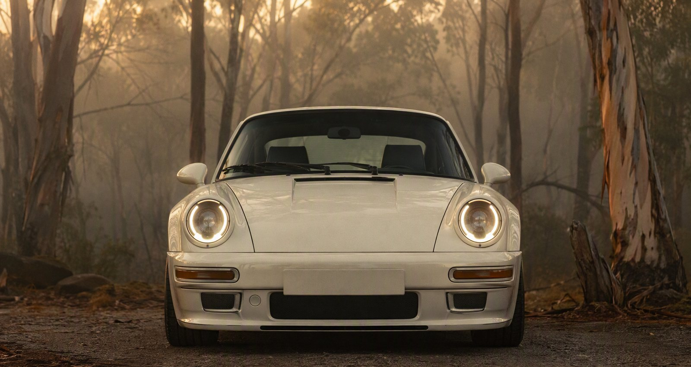
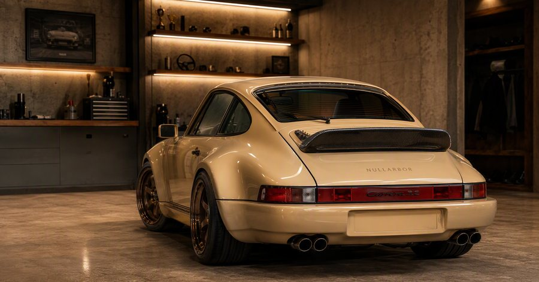
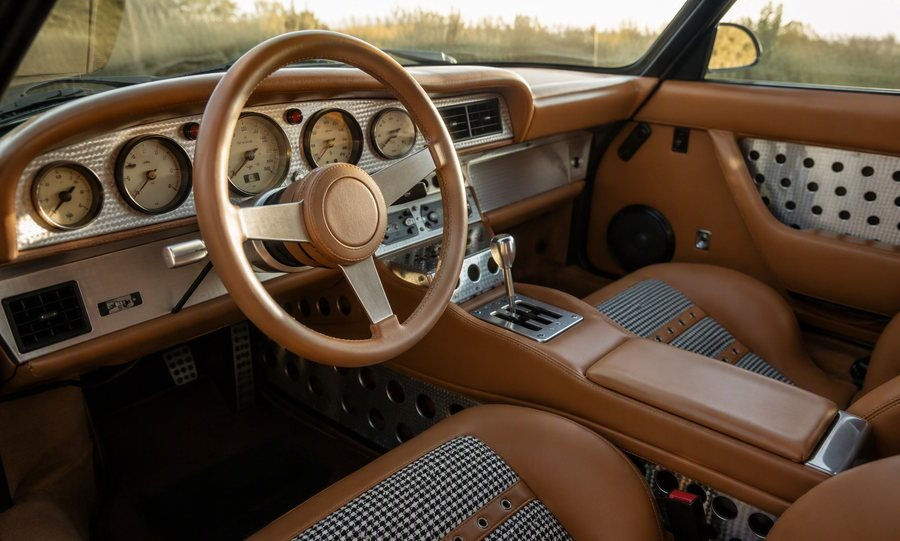
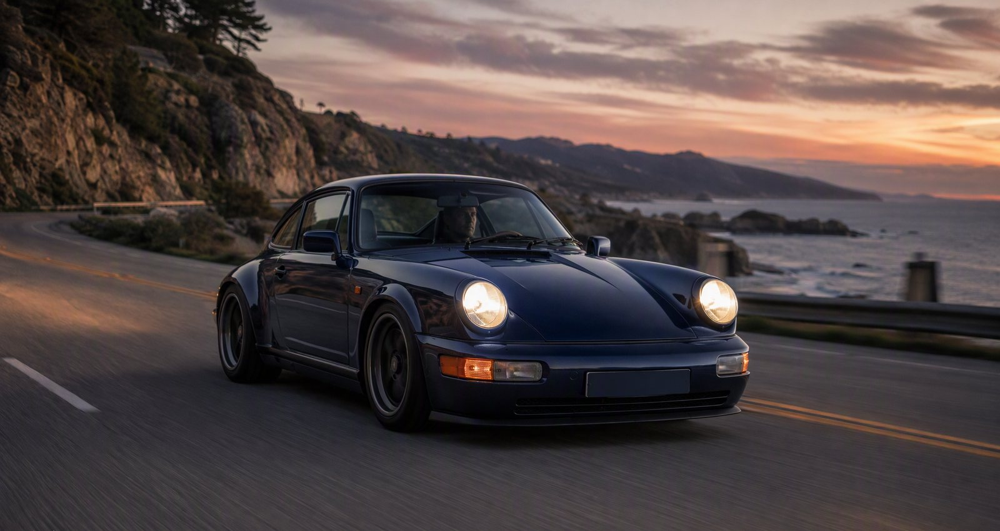
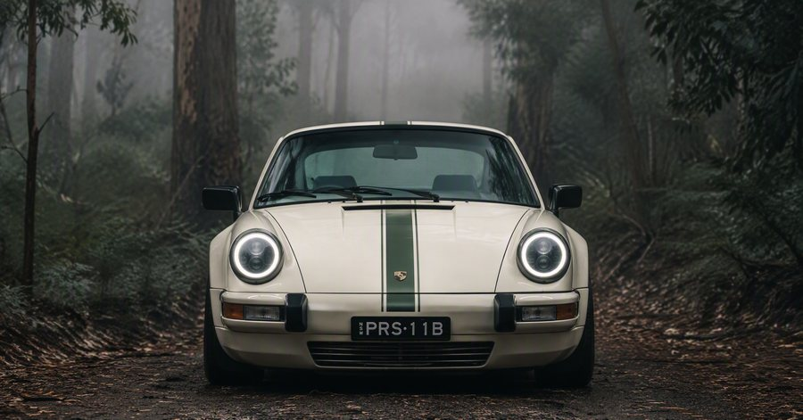
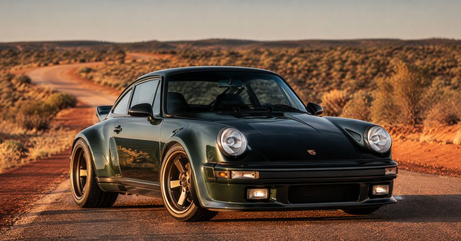
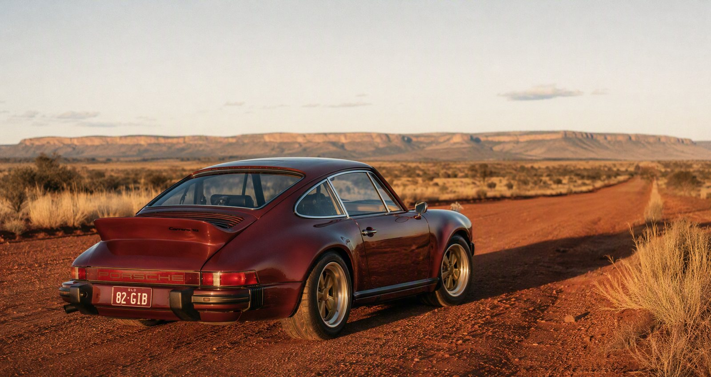
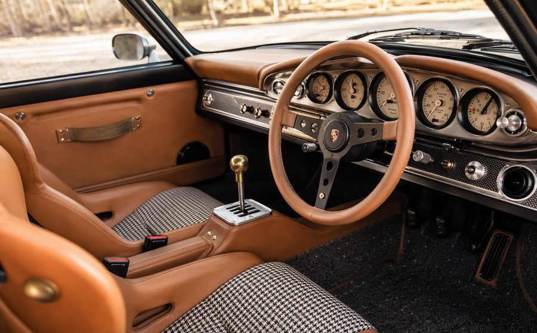
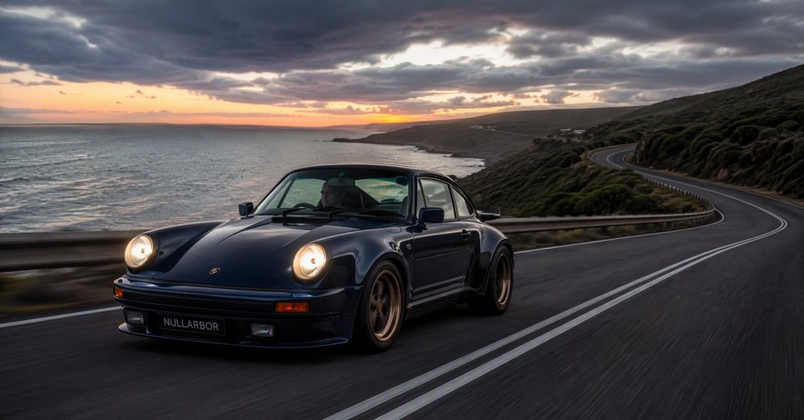

The road is part of the design.
Australia changes quickly beneath a car.
One hour, salt air and a coastal horizon.
The
next, rain in the trees. Heat on the plain.
A surface that asks
more of the suspension, the cooling,
the seats and the person
behind the wheel.
Antipode
begins there.
We take the
enduring shape of an air-cooled 911 and
make it feel entirely at
home on this side of the world.
Not as a replica of the past,
but as a car with many more
miles ahead of it.

Distance
Built for early departures, long lunches, changing weather and roads that continue after the map becomes less certain.
Feel
The weight of the steering. The sound behind you. The click of a switch. The details that make a drive memorable.
Belonging
Each commission is shaped around its owner, then finished to belong to a particular life, collection and corner of the world.
A familiar shape.
A different sense of place.
Every Antipode begins with a 1979–1985 air-cooled 911.
The proportions remain recognisable: compact,
upright, unmistakable. But the experience becomes more complete.
The
car is restored in its entirety, reconsidered in detail, and tuned to
become more involving with every kilometre.
Nothing is added simply to announce itself.
Everything
is considered because it will be touched, heard, seen or relied upon.


A mechanical conversation, not a simulation.
A commission developed around a single point of view.
Created for the journey beyond the handover.
The continent in the car.
The coast after rain. Eucalypt forest before sunrise.
A red road
at the end of a long day.
Antipode
is not defined by one landscape.
It is defined by the change
between them.
That is
where these cars make sense:
not under lights, but in the space
between one place and the next.




The parts you remember.
A car is never only its outline.
It
is the cool metal of a gear lever.
The first touch of worn
leather.
The weave of a seat insert. The rise in engine note
as
the road clears in front of you.
Antipode
is built around these moments:
the small, physical details that
turn a beautiful object
into a car you know by heart.


One car. One point of view.
An Antipode commission begins with a conversation.
How will you use the car?
Where will it take
you?
What should it feel like in the first kilometre,
and in
the thousandth?
From
there, a collection of choices becomes a coherent whole:
the
donor, stance, colour, cabin, materials and character.
The
process is deliberate, collaborative and unhurried.
The finished car is not chosen from a list.
It
is discovered over time.
- 01 / Conversation
- 02 / Direction
- 03 / Creation
- 04 / Delivery
- 05 / The Road Ahead
Begin with a road.
A limited number of private commissions are now being considered.
Tell
us where you would take yours.